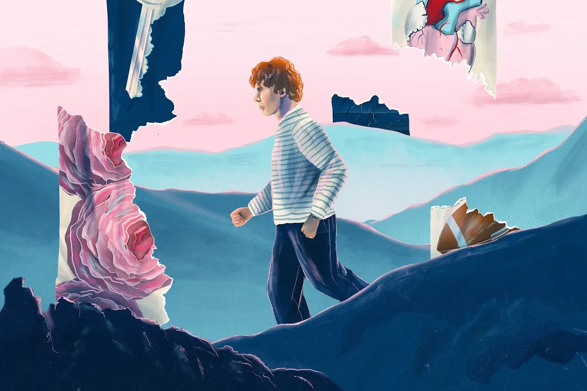
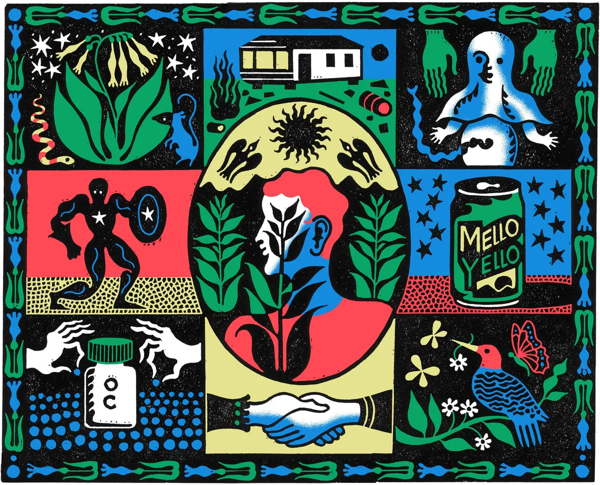

Lit Crit
Demon Copperhead
Barbara Kingsolver’s Pulitzer Prize-winning journey through Appalachia

Barbara Kingsolver found her way into the opioid epidemic through Charles Dickens. After a visit to his house in Kent, England, she took the plot of David Copperfield, moved it to Lee County, Virginia, and handed it to a boy born in a trailer. The result does for the lost children of Appalachia what Dickens did for those of Victorian London: it makes them hard to look past.
Demon Copperhead wants to know who is to blame. Its hero comes into the world with the odds already set, the son of a teenage mother in and out of rehab, and the book follows him through foster homes, football, injury and addiction. It is brutal and honest, and often funny. Kingsolver never lets the reader forget the systems that fail him: the caseworkers who are stretched too thin, the farmer who takes in foster boys for their labor, the clinics that hand out pills.
“I thought my life couldn’t get any worse,” he says. “Here’s some advice: Don’t ever think that.” He’s 10 years old.
Kingsolver lets Demon thank Dickens himself: “Christ Jesus did he get the picture on kids and orphans getting screwed over and nobody giving a rat’s ass. You’d think he was from around here.” Her own thanks come in the acknowledgments, where she salutes the older novel as an “impassioned critique of institutional poverty and its damaging effects on children in his society… [I]n adapting his novel to my own place and time… I’ve come to think of him as my genius friend.”
First, I got myself born
He starts life as Damon Fields, a name that soon slips into Demon. “Copperhead” comes from the red hair his father left him and the venomous snakes native to his corner of Appalachia. His mother, he tells us, had put in three years of Alcoholics Anonymous before she was old enough to drink. The voice is the book’s great achievement: blunt, profane, quick with a joke, and closer to Huck Finn than to David Copperfield.
You get to a point of not giving a damn over people thinking you’re worthless. Mainly by getting there first yourself.
Anyone who knows Dickens’s novel will spot the landmarks, but Kingsolver has rebuilt them from local materials. Demon tells the story himself, beginning with his own birth, and it rarely slows over more than 500 pages.
David’s troubles start when his mother marries Mr. Murdstone. Demon’s start when his takes up with Murrell Stone, known as Stoner, whom she meets at Walmart. He drives a truck for a brewing company and comes with medical and dental coverage, which for a while passes for good fortune. Then the bullying begins. Stoner forbids Demon to see his best friend, Matt “Maggot” Peggot, on the grounds that the boy is a “little faggot” with a mother in jail. His cruelty sends Demon’s mother back to drugs, and an overdose kills her.
The middle stretch can wear on you. The Harvard Crimson’s reviewer called it “rinse and repeat”: Demon gets free of one bad guardian only to land with another. That is rather the point. Kingsolver wants the reader to feel how few exits there are. The details are hard to take, but none of them is there for show.

Demon’s is not the only story here. His mother’s love outlasts her failures. Mrs. Peggot, the neighbor, fills in when his mother can’t. June Peggot, a nurse, sees early what the pills are doing and steers Demon toward help once he is hooked. And Angus, his foster sister, has no interest in being what Lee County expects of a girl; she also sees him more clearly than anyone.
Between them they carry the book’s quieter argument. The work of holding people together falls mostly to women, many of them close to going under themselves.
Hit this
Kingsolver grew up in rural Kentucky and has farmed in the mountains of southwestern Virginia since 2004. She is writing about her neighbors, and it shows: the people of Lee County get warmth, humor and no pity.
To learn about the drugs themselves she went to Art Van Zee, a Virginia doctor who was among the first to warn about OxyContin. He introduced her to patients in recovery, and their accounts run through Demon’s: how withdrawal feels, how the pills are smoked or injected, and the trade that grows up around them, from pill mills to trap houses to prostitution.
“Every single one of these informants started with a legal prescription following doctor’s orders,” Kingsolver told The New York Times.
The book has little patience for the way the rest of the country talks about Appalachia. Demon hears the jokes and knows what they cost: a place that is easy to mock is easy to ignore, and easy to sell pills to. He survives. He is careful to say how many did not.
Demon Copperhead is long and often bleak, and it will not suit everyone. But few novels explain the opioid years so well to readers who were spared them, and fewer still do it in a voice you would follow anywhere.
Higher ground
Kingsolver did not stop at the novel. She took the royalties back to Lee County and asked what was needed. The answer was help for people in recovery, many of whom leave treatment with nowhere to live and no job.
In January 2025 she opened Higher Ground Women’s Recovery Residence (opens in new tab) in Pennington Gap, the first house of its kind in the county, and announced it on Instagram (opens in new tab). Women can stay for up to two years, at $50 a week as of late 2025, with help finding work and enrolling in community college. By August of that year all seven places were taken. Part of the profits from her next novel, Partita, will go to the house as well.
About the author
Barbara Kingsolver trained as a biologist and has worked as a writer since 1985. Her ten novels include The Poisonwood Bible, The Lacuna, Unsheltered and, most recently, Partita (2026). Animal, Vegetable, Miracle is her account of a year of eating close to home.
Demon Copperhead shared the 2023 Pulitzer Prize for fiction with Hernan Diaz’s Trust and helped make her the only writer to win the Women’s Prize twice. She received the National Humanities Medal in 2000 and, in 2024, the National Book Foundation’s Medal for Distinguished Contribution to American Letters.